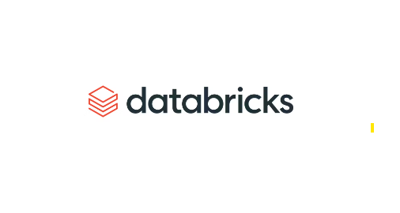
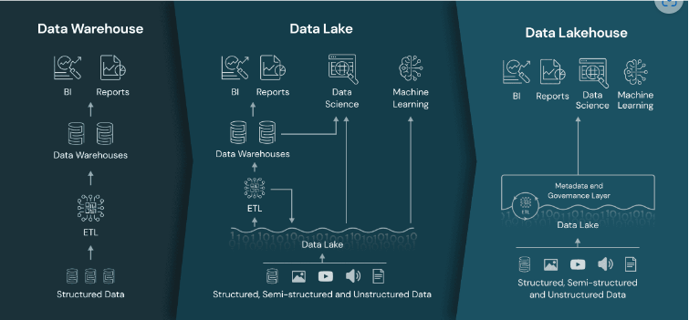

Databricks гэж юу?#
Ерөнхий ойлголтууд#
Датабрикс бол data engineering, machine learning, analytics гэсэн бүх дататай холбоотой хэрэгцээг нэг дороос хангасан хүчирхэг флатформ юм. Тооцоолох хадгалах цэвэрлэх шэйрлэх загварчлах график хүснэгт гаргахаас авхуулаад маш олон мэргэжлийн хүмүүс олон байгууллагууд датаг аюулгүйгээр шэйрлэж хэрэглэж болдог.

Давуу талууд#
Хамтын орчинбуюуUnified Workspace: Databricks нь олон янзын хэрэглэгчид олон төрлийн ажлыг хамтын орчноос гүйцэтгэх боломжийг олгодог. Дата код зэргийг мэдэх шаардлагагүйгээр удирдлагууд захирлууд өөрсдийн датаг амархан мониторинг хийснээр аюулгүй байдлын асар том боломж олж авдаг.
Энгийн жишээ авая. Танай компани мэргэжлийн компаниас дата инжинерчлэлийн тусламж шаардлагатай болсон гэж төсөөлье. Гэтэл танай дата дотор байгууллага хувь хүний нууцтай холбоотой мэдээлэл бүхий нэг багана байлаа гэхэд зөвхөн тэр баганыг гүйцэтгэгч компани харах боломгүйгээр датаг боловсруулж болдог. Бас болоогүй тухайн датан дээр хэн хэзээ яг ямар үйлдэл хийсэн нь тодорхой харагдаж байдаг. Ингэснээр аль аль талд итгэл үүсдэг. Баахан нууцлалын гэрээ бичиг цаас болохгүй гэсэн үг.
+------------+--------------+--------------------------------+-------------------+
|name |date_of_birth |hashed_salary |anonymized_address |
+------------+--------------+--------------------------------+-------------------+
|John Doe |1980-05-10 |c4d23d97b6a6414bc8fb144abbeeeef7 |Anonymized |
|Jane Smith |1992-12-15 |b6c87dd984adee6ff453a94a5e36f1b1 |Anonymized |
|Mike Johnson|1985-07-22 |a55c1e1398dd42de8d34d96c4a523f40 |Anonymized |
+------------+--------------+--------------------------------+-------------------+
Дээрх жишээн дээр танай дататай харьцаж байгаа гадны ажилтан танай ажилчидын цалин гэрийн хаягийг харах боломжгүй ч танай датаг загварчилж автоматжуулж чадна. Харин танай хүний нөөц энэ датаг бүтнээр нь харж болдог. Нэмж хэлэхэд яг нэг датаг өөр өөр түвшинд эзэмшиж болдог. Компаний ашиг хэсгийг зөвхөн захирал л харах эрхтэй байдаг ч юм уу. Eр нь out sourcing хийж хүний нөөцөө шийдэхэд маш чухал флатформ.
Паралель тооцоололбуюуParallel computing: Датабриксийн суурь нь хүчирэгApache Sparkхэмээхopen-sourcedistributed computingengine. Их хэмжээний датаг олон машин дээр тарааж зэрэг асар хурдтай тооцолдог. Датаны хэмжээ хэр зэрэг хүчин чадал шаардахаас хамаараад автоматаар хэвтээ тэлэлт хийдэг онцлогтой. Энэ нь open-source учир сангууд үнэгүй байдаг.
Жишээ нь нэг сая гаруй мөртэй датан дээр (excel limit 1 m) python pandas сан ашиглан тооцоолол хийх гэвэл машин хичнээн хүчтэй байгаад memory нь хүрэхгүй унадаг бол датабрикс дээрх pyspark н хувьд энэ нь хэдхэн секундын ажил юм. JP Morgan датабрикс ашиглаж 500 питабайт дата боловсруулалт хийдэг. Хэр их датаны тухай яриад байна вэ гэвэл хэрэв CD д хуулаад өрөх юм бол Эвэристийн орголоос 100 дахин өндөр багана үүснэ гэсэн үг юм.
Lakehouseтехнологи: Ганцхан энэ л датабриксийг сонгох шалтгаан болж болно. Lakehouse нь Data Lake, Data Warehouse 2 н давуу талуудыг авсан шинэ технологи юм.

Дээрх зурагт тодорхой дүрсэлжээ. Data Warehouse нь зөвхөн анализ хийхэд тохиромжтой боловч үнэтэй machine learning real-time streaming хийж чаддаггүй бол Data Lake хямд шууд машин сургалтанд ашиглах боломжтой боловч анализ хийхэд заавал warehouse үүсгэх шаардлагтай болдог дээр нь датаны чанар стандарт муу байдаг. lakehouse нь энэ сул талуудыг шийдсэн байдаг.